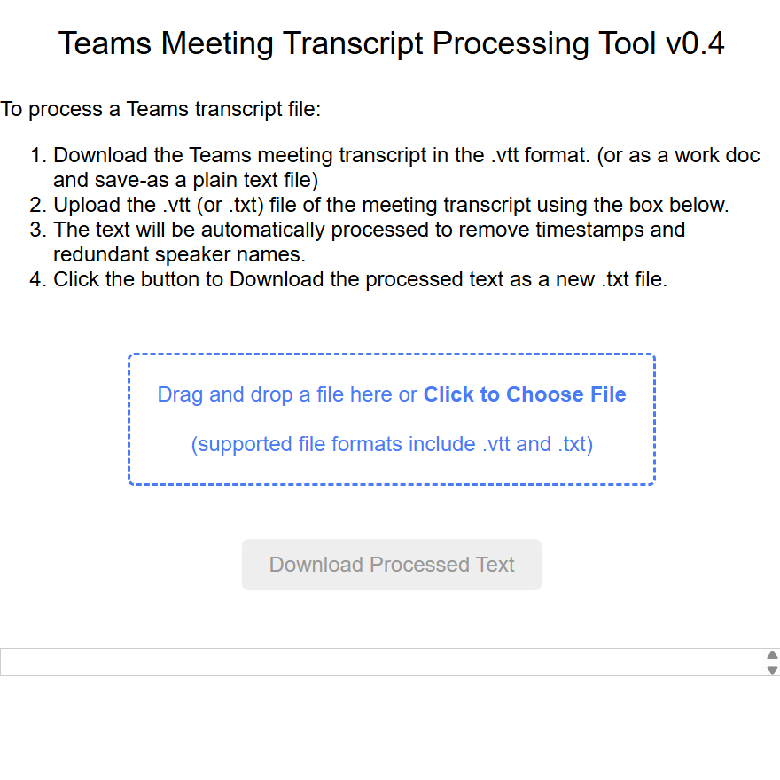

Teams Meeting Transcript Processor
Work project · Clean .vtt/.txt transcripts for fast reading and downstream analysis.
What it does (super short):
- Accepts Teams
.vtt (or plain .txt) files.
- Removes timestamps and repeated speaker labels.
- Outputs a clean text file ready for search, tagging, or LLM summarization.
Typical steps:
- Download the Teams transcript (
.vtt or Save-as .txt).
- Upload the file.
- Download the processed text.